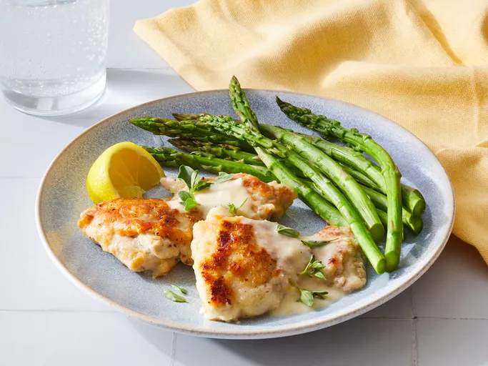

Creamy Lemon Parmesan Chicken

Description
Cheese: Of course, you’ll need Parmesan cheese (freshly grated is best). You’ll also need mascarpone (or cream cheese) for the rich sauce.
Flour: Dredge the chicken in all-purpose flour before you brown it for the crispiest results.
Chicken: Eight boneless skinless chicken thighs will make four servings.
Seasonings: Simply season the chicken with salt and black pepper.
Oil: Brown the chicken in olive oil.
Garlic: Three cloves of garlic add bold flavor.
Broth: Use store-bought or homemade chicken broth.
Lemon: This creamy chicken recipe uses every part of the lemon, from the zest to the juice. You’ll also garnish each serving with lemon wedges.
Cornstarch: Make a slurry with cornstarch and water to thicken the sauce.
Herbs: Garnish each serving with fresh basil or oregano for a pleasant pop of color.
Ingredients
- 3/4 cup grated parmesan cheese
- 1/4 cup flour
- 8 skinless boneless chicken thighs
- 1/2 teaspoon salt
- 1/2 teaspoon freshly ground black pepper
- 2 tablespoons olive oil
- 3 cloves garlic, minced
- 1 3/4 cups low sodium chicken broth
- 1/2 cup mascarpone
- 1 teaspoon lemon zest
- 3 tablespoons freshly squeezed lemon juice
- 1 tablespoon cornstarch
- 1 tablespoon water
- chopped fresh oregano to taste
- 4 lemon wedges for serving
Steps
- Gather all ingredients.
- Combine 1/4 cup Parmesan cheese and flour in a shallow dish.
- Sprinkle chicken with salt and pepper. Dredge chicken in flour mixture to coat.
- Heat oil in a 12-inch skillet over medium-high heat. Add chicken, half at a time, and brown well, 3 to 4 minutes per side. Remove chicken from skillet.
- Add garlic to skillet and cook over medium until fragrant, about 1 minute.
- Whisk together broth, mascarpone, lemon zest, lemon juice, and remaining 1/2 cup Parmesan cheese in a medium bowl. Add to skillet. Bring to a boil.
- Whisk together cornstarch and water in a small bowl. Add to skillet, stirring until thickened and bubbly.
- Return chicken to skillet, return to boiling. Reduce heat, cover and simmer until chicken is no longer pink (170°F), 5 to 6 minutes.
- Slice chicken and return to sauce.
- Serve mixture topped with fresh oregano. Serve with lemon wedges.